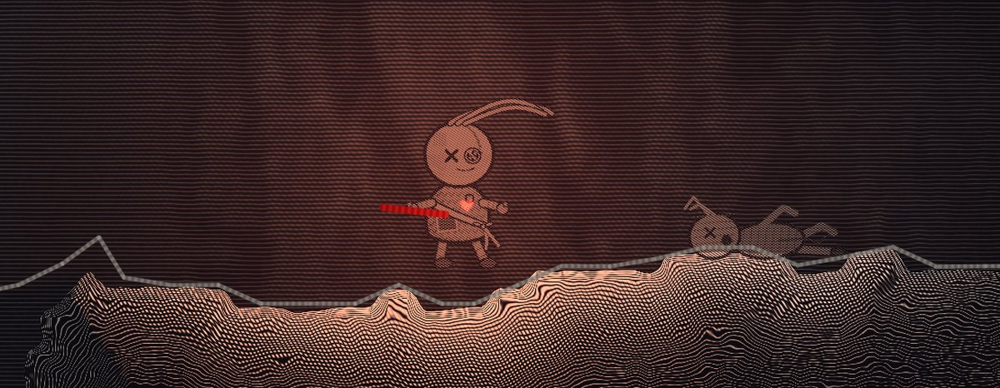
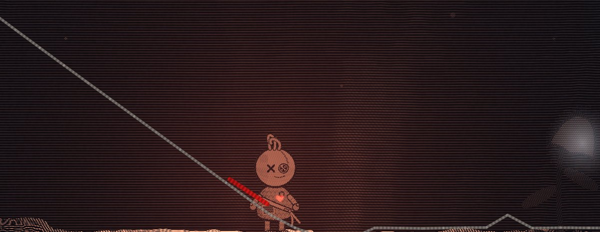
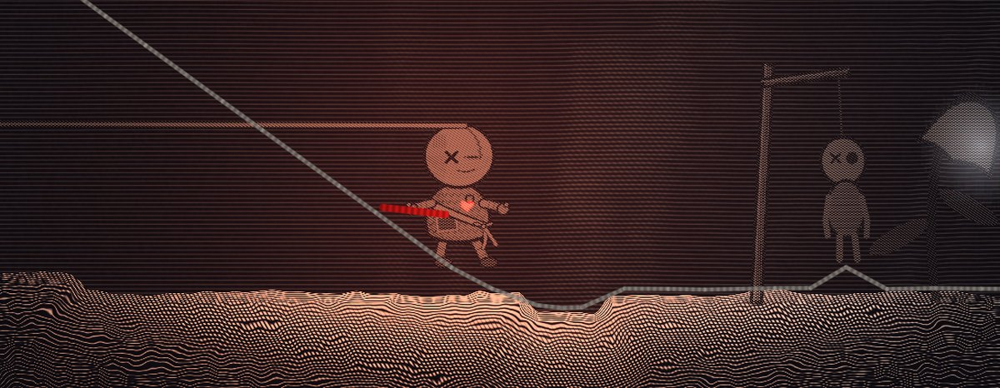
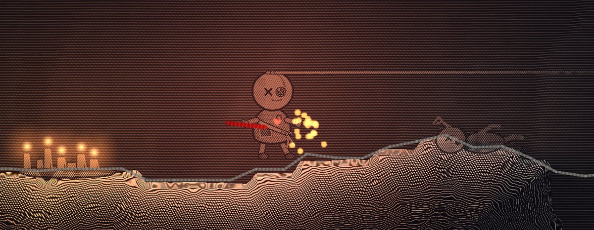
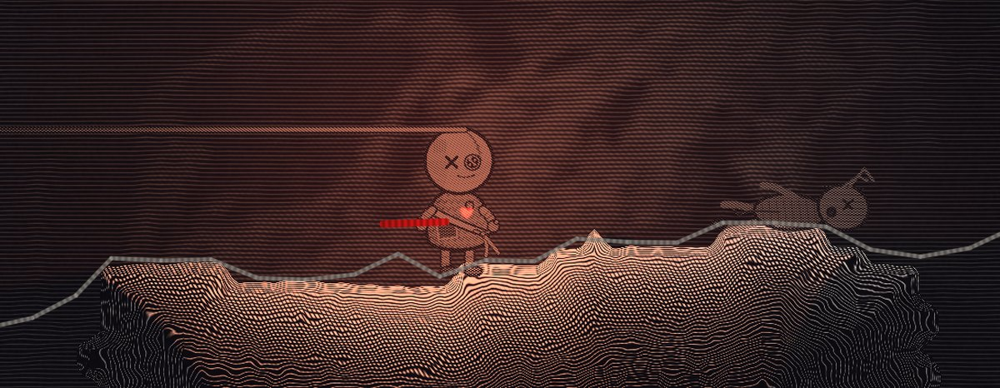
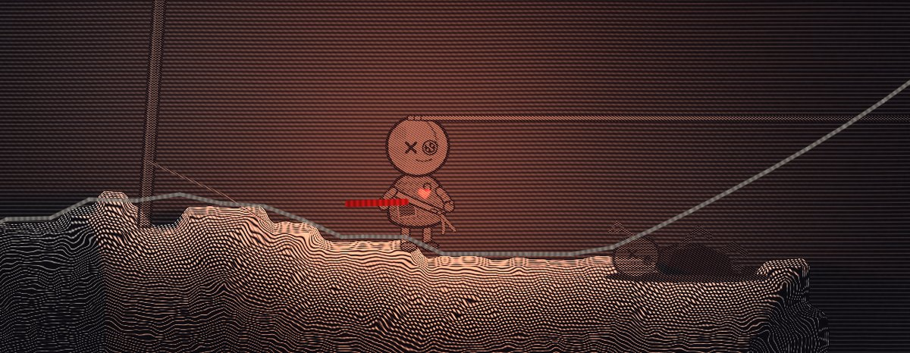

The plot no longer runs straightand the deep gets colder the further down you go
I read the whole story as it stood: every line her voice speaks, the keepsakes, the props, the ending and both films. It didn't meet any of your three criteria. It was a gentle story with one feeling from start to finish, and its first line already told you how it would end.
It's rewritten now. Every spoken line and every keepsake text is new, and the story turns twice before the end. The ending scene plays out differently and the epilogue film has been re-cut. Things along the route now get grimmer the deeper you go. The plot itself is sealed further down this page, so you can play it first.
It should not be straightforward from the beginning till the end. It should be much darker, more ominous and unexpected. And the further the game goes, the darker it should get.
| Criterion | Before | Now |
|---|---|---|
| Not straightforward | One idea, stated in the first line and delivered at the end | Two turns, at the Root Gardens and at the Ink Mere. The last line changes what the ending means. |
| Darker, ominous | Sad but cosy, comforting throughout | Dread from the second knot on. Things in the caves back the words up. |
| Unexpected | The ending was the one the first line promised | The thing you came down to do isn't what you think it is |
| Darker with depth | Roughly the same tone in every area | Each area is grimmer than the one above. Near the bottom the voice itself goes wrong. |
A spoiler-free outline of the arc, area by area:
| Area | Tone | Things left in the dark |
|---|---|---|
| The Brink | Tender, slightly too insistent | 0 |
| The Throat | Dread: something is named | 2 |
| The Root Gardens | First turn, cold | 2 |
| The Bell Gallery | Grim history | 2 |
| The Ink Mere | Second turn: a confession | 2 |
| Down to the Loom | Wrong: her voice, not her words | — |
| The Loom | The ending, and a last line | yours |
CLAUDE.md.Every long winter the dark at the bottom of the old village well calls one name up the shaft, and whoever is called goes down to the Loom and is woven in. The village tried everything: the windlass, miners digging down to kill it, a chapel of bells, a ferry across the ink. Only the cottage is left now, and this winter it called her.
| Where | Her voice |
|---|---|
| The Brink, at the lip of the pit | I've gone down after the light, little one. Don't follow me. ...But if you do, keep hold of the thread. Never let go of the thread. |
| The Throat | Seventy winters I sat at that window and listened to the dark breathe. Every winter it calls one name up the well. Last night... it called mine. |
| The Root Gardens | I made you from the scraps of everything I loved. A sleeve of his coat. The ribbon from my wedding. You're stronger than the others were. |
| The Root Gardens, by the moths | The moths found the others first. Don't grieve for them, little one. They were only practice. |
| The Bell Gallery | Pluck your thread, and the bells will answer. They rang for everyone it took. The ringer rang until his hands bled... and then they rang for him. |
| The Ink Mere | Don't let the ink touch you. It makes things forget what they are. I forgot for seventy winters... I forgot that I was made, too. |
| The way down to the Loom | She's so tired, little one. Her yarn's run grey. She can't climb back up. ...Come down. Come and sit with us. It's warm in the Loom. |
| The Loom, at the empty chair | There you are. I came all this way too, once, and tied my thread to an old woman's. Tie yours to mine, little one... someone has to go home. |
| When the red reaches the cottage | There. Next winter, it will call your name. Start knitting early, little one... it takes a few. |
| Room | Text |
|---|---|
| The Cellar | Her first spool. Scratched into the end, over and over, in clumsy letters: I WAS MADE. |
| The Diggers' Cache | From a miner's coat. They dug down to kill the thing that calls. The coats came back up the well, folded. The men didn't. |
| The Seed Hollow | Sweet peas. 'For the spring,' it says. There has not been a spring on the Brink in seventy years. |
| The Ringer's Cell | Not hers. Older. Dented in the same place, by the same needle, by the woman who knitted her. |
| The Sill | A button eye, not yours. You have been passing them all the way down. |
| The Last Basket | Half-knitted, needles still in it, sized for a hand with no fingers. It isn't for you. It's for the next one. |
Each slider shows the same spot before and after. The remains are drawn like the rest of the deep, so they only really show inside the thread's light.
Drag the thread to compare
The Throat, first ledge. A lone button eye and a scrap of knitting.

BeforeAfterDrag the thread to compare
The Throat, fourth ledge. A doll face down at the end of the ledge.
Drag the thread to compare
The Root Gardens, first cave. One slumped on the floor.
Drag the thread to compare
The Root Gardens, by the moths. One eaten hollow, its rows pulled loose.


BeforeAfterDrag the thread to compare
The Bell Gallery, first pillar. One hung from a stake by its own thread.

BeforeAfterDrag the thread to compare
The Bell Gallery, fourth pillar. One that fell short of the last ring.

BeforeAfterDrag the thread to compare
The Ink Mere, first island. One that got no further.

BeforeAfterDrag the thread to compare
The Ink Mere, fourth island. One the ink got into.
Not checked:
record.py <id> and pick.py.app/src/level.jsThe new lines and keepsake texts.app/src/props.jsThe eight new props along the route, and the marks your deaths leave.app/src/world.js · main.js · draw.jsMarks left where the doll dies, saved with your progress; the changed ending.scripts/voice/New script and delivery notes; the second voice under two lines.scripts/cine/edit.pyThe epilogue re-cut.docs/STORY.mdThe full plot and the area-by-area escalation map, for future changes (spoilers).electron/main.js · CLAUDE.mdTest runs never show a window or play sound.